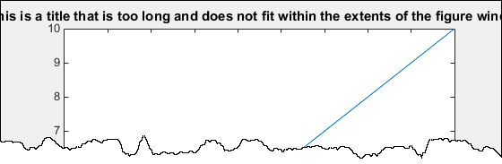
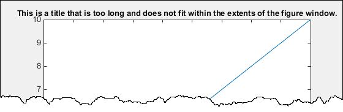
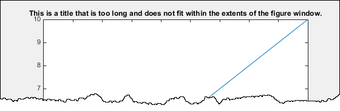
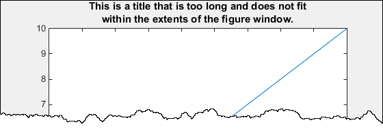

Make the Graph Title Smaller
MATLAB® graphics titles use a bold and slightly larger font for better visibility. As a result, long titles might not fit within the extents of the figure window. For example, this code creates a plot that has a long title that does not fit within the extents of the figure window.
plot(1:10); title(['This is a title that is too long and does not fit', ... 'within the extents of the figure window.'])

The title font size is based on the TitleFontSizeMultiplier and
FontSize properties of the axes. By default, the
FontSize property is 10 points and the
TitleFontSizeMultiplier is 1.100, which means
that the title font size is 11 points.
To change the title font size without affecting the rest of the text in the axes, set
the TitleFontSizeMultiplier property of the axes. For example, change
the title font size to match the other text in the axes.
plot(1:10); title(['This is a title that is too long and does not fit', ... 'within the extents of the figure window.']) ax = gca; ax.TitleFontSizeMultiplier = 1;

To make the font size smaller for the entire axes, set the FontSize
property. Changing this property affects the font for the title, tick labels, and axis
labels, if they exist.
plot(1:10); title(['This is a title that is too long and does not fit', ... 'within the extents of the figure window.']) ax = gca; ax.FontSize = 8;

To display the title across two lines, use a cell array with curly brackets
{} to define a multiline title.
plot(1:10);
title({'This is a title that is too long and does not fit', ...
'within the extents of the figure window.'})